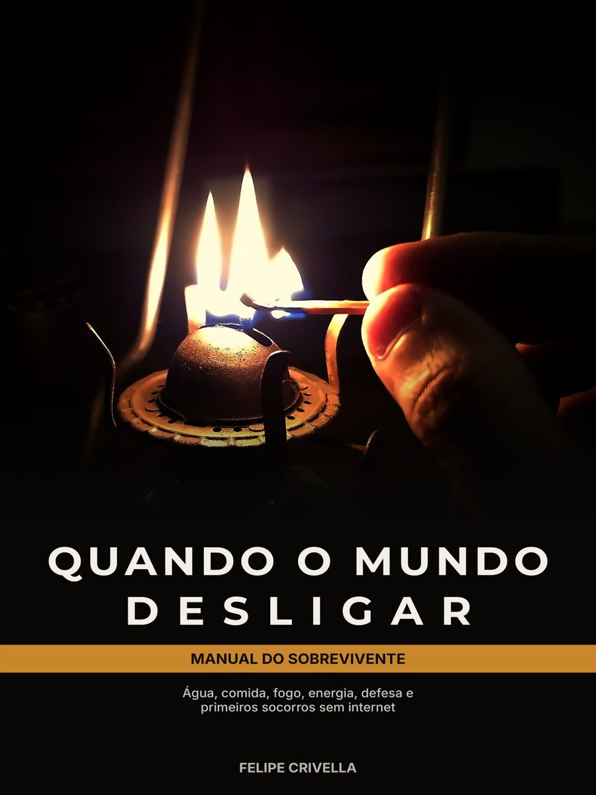
GUIA GRATUITO · PODE REPASSAR
Conhecer o livro completoPara quando faltar luz, água e socorro
Este guia gratuito reúne partes do livro Quando o mundo desligar — Manual do Sobrevivente. Leia agora, com calma.
Depois de aberta uma vez, esta página continua funcionando sem internet neste celular. Para achar rápido: menu do navegador → Adicionar à tela inicial.
Baixar em PDF para imprimirEmergência: os primeiros minutos
Telefones de emergência
| Serviço | Número |
|---|---|
| SAMU (ambulância) | 192 |
| Bombeiros | 193 |
| Polícia Militar | 190 |
| Defesa Civil | 199 |
| Disque-Intoxicação (Anvisa) | 0800 722 6001 |
| CVV (apoio emocional) | 188 |
Ao ligar: diga onde está, o que aconteceu, quantos feridos e como estão. Não desligue até mandarem.
Diante de um ferido, nesta ordem:
- Você em segurança. Fogo, fio caído, carro, desabamento, tiroteio, bicho: olhe antes de correr.
- Sangramento grande: pare primeiro.
- Respiração: abra a passagem do ar; se não respira, massagem no peito.
- Choque e frio: deite, isole do chão, cubra.
- Chame socorro, se houver, ou mande alguém chamar enquanto você atende.
Sangramento grave
Sangue que jorra, empoça ou encharca a roupa mata em poucos minutos. Ponha luvas ou um saco plástico nas mãos.
- Aperte. Pano limpo em cima da ferida e aperte com força, com as duas mãos e o peso do corpo. Não solte para olhar. Encharcou: outro pano por cima, sem tirar o primeiro.
- Ferida funda na coxa, braço, sovaco, virilha ou pescoço: empurre gaze ou pano para dentro, até o fundo, até encher o buraco. Aperte por cima por pelo menos 3 minutos. Ainda sangra: ponha mais gaze ou pano e aperte mais 3 minutos, até parar.
- Parou: amarre uma faixa bem apertada por cima do pano.
- Torniquete, só no braço ou na perna, quando o sangue jorra, quando apertar não resolve ou quando o membro foi arrancado: faixa de pelo menos 4 dedos de largura, posta de 5 a 8 cm acima da ferida (sem ver de onde vem, o mais alto possível), gire a haste até o sangue parar, trave e escreva a hora na testa da pessoa. Não afrouxe.
- Deite a pessoa, cubra e trate o choque.
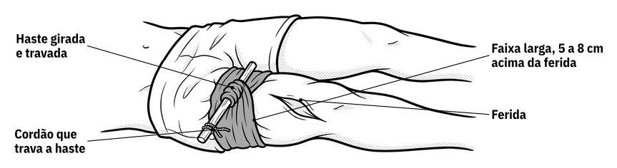
Não use torniquete à toa: sangramento que para apertando não leva torniquete.
Nariz: sente com a cabeça para a frente e aperte a parte mole do nariz por 10 a 15 minutos.
Desacordado e massagem no peito
- Chame alto e toque nos ombros.
- Não respondeu: deite de costas, uma mão na testa, dois dedos debaixo do queixo, incline a cabeça para trás.
- Olhe, escute e sinta a respiração por até 10 segundos.
- Respira normalmente: ponha de lado, com a boca virada para o chão.
- Não respira, ou só puxa o ar de vez em quando: massagem no peito agora, e mande chamar socorro.
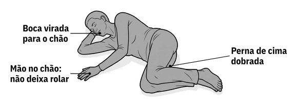
Adulto:
- Pessoa de costas, em chão firme.
- Base de uma mão no centro do peito, a outra por cima.
- Braços retos, ombros sobre as mãos. Afunde 5 a 6 cm.
- 100 a 120 por minuto: quase duas por segundo. Deixe o peito voltar.
- Sem treino: só massagem, sem parar. Com treino: 30 compressões e 2 sopros.
- Revezem a cada 2 minutos.
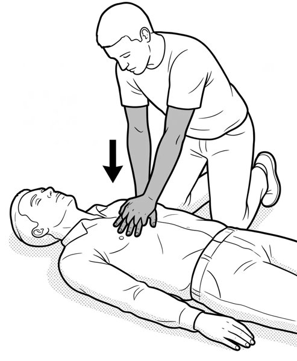
Criança: uma ou duas mãos, afundando cerca de 5 cm; 30 compressões e 2 sopros.
Bebê: abrace o peito e aperte com os dois polegares no meio, logo abaixo da linha dos mamilos, uns 4 cm; ou use a base de uma mão. 30 compressões e 2 sopros cobrindo a boca e o nariz.
Afogado: comece com 5 sopros, depois 30 compressões e 2 sopros.
Desfibrilador: se houver, ligue e siga o que ele fala.
Pare: quando a pessoa se mexer, tossir ou respirar, quando o lugar ficar perigoso ou quando você não aguentar mais.
Engasgo
Tosse ou fala: deixe tossir. Não bata.
Adulto e criança que não conseguem tossir, falar nem respirar:
- Atrás da pessoa, incline-a para a frente: 5 golpes com a base da mão entre as escápulas.
- 5 compressões na barriga: punho acima do umbigo, a outra mão por cima, puxe para dentro e para cima.
- Alterne 5 e 5 até sair ou até desmaiar.
- Grávida ou pessoa muito gorda: compressões no peito.
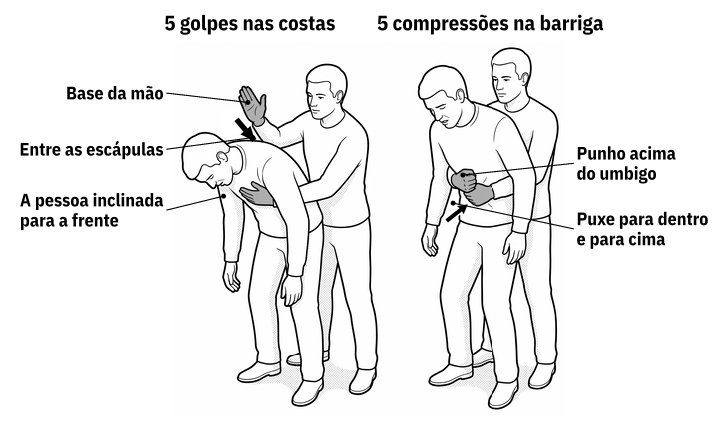
Picada de cobra, escorpião e aranha
O remédio é o soro, e ele só existe no hospital. Tudo o que se faz antes é para chegar lá bem.
- Afaste a pessoa do bicho, sem tentar matar nem pegar.
- Lave com água e sabão.
- Deite e deixe quieta; braço ou perna picados, elevados.
- Tire anéis, pulseiras, relógio e calçado do lado picado.
- Leve ao serviço de saúde o mais rápido possível. Picada no pé: carregue a pessoa.
- Se der, foto do bicho, de longe. Não perca tempo procurando.
Não faça: não amarre, não corte, não chupe, não queime, não ponha nada no ferimento, não dê bebida alcoólica.
Cobra: cascavel e coral quase não doem, e são das mais perigosas. Toda picada de cobra vai ao hospital, mesmo sem dor.
Escorpião: compressa morna para a dor, nunca gelo.
Água que não adoece
Trate sempre, mesmo com muita sede. No cerco de Sarajevo, quem estava com sede bebia a primeira água que achava, e muitos morreram de doença. Em Aleppo, as famílias passaram a depender de poços contaminados por fezes; em Mariupol, as crianças que ficaram nos porões bebendo água de nascente adoeceram quase todas.
Duas etapas, nesta ordem: 1. Clarear (tira a sujeira, não mata germe) → 2. Desinfetar (mata germe). Só beba depois da etapa 2.
Ferver
Quando: sempre que houver fogo. É o método mais seguro.
- Água turva: clareie antes.
- Ferva em bolhas grandes e fortes por 1 min. Acima de 2.000 m (alto de serra): 3 min.
- Tampe e esfrie no mesmo recipiente.
- Gosto "de choco": passe de uma vasilha para outra algumas vezes.
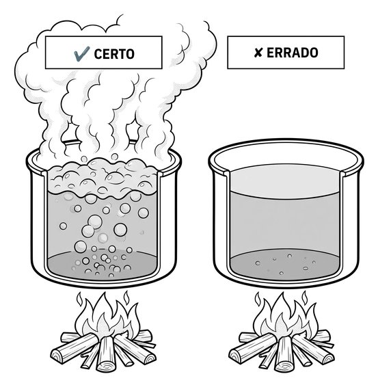
Cloro
Quando: muita água de uma vez, ou sem fogo.
Produto: hipoclorito de sódio 2,5% (grátis no posto de saúde) ou água sanitária cujo rótulo diz só "hipoclorito de sódio e água". Pastilhas para água: siga a embalagem.
Busque na internet por: “hipoclorito de sódio 2,5%”, “pastilha purificadora de água potável”
| Água | 1 L | 20 L | 200 L | 1.000 L |
|---|---|---|---|---|
| Cloro | 2 gotas | 1 colher de chá | 1 colher de sopa | 2 copinhos de café |
- Água turva: clareie antes.
- Pingue a dose, misture e tampe.
- Espere 30 min.
- Sem cheiro leve de cloro: repita a dose e espere mais 15 min.
Sol (garrafa PET)
Quando: só quando não houver como ferver nem clorar.
- Garrafa PET transparente, sem cor, até 2 L, sem rótulo e sem riscos fundos.
- A água precisa estar clara: dê para ler jornal através da garrafa cheia.
- Encha 3/4, tampe, chacoalhe 20 s e complete até a boca.
- Deite a garrafa em telhado ou chapa de metal, em sol pleno.
- 6 h com céu limpo ou meio nublado. 2 dias com céu todo nublado. Com chuva não funciona.
- Beba direto da garrafa, sem trocar de recipiente.
Fogo sem isqueiro
Lente ao sol
- Ponha o carvão de pano ou isca escura (casca, folha seca escura) no chão, protegido do vento.
- Segure a lente entre o sol e a isca e afaste ou aproxime até o ponto de luz ficar o menor possível.
- Segure firme. Saiu fumaça e apareceu brasa: sopre de leve e passe para o ninho.
Pilha e palha de aço
- Desfie a palha de aço fina até ficar um chumaço fofo.
- Encoste os dois polos da pilha de 9 V ao mesmo tempo na palha. Com pilhas comuns, junte duas em fila e encoste um fio da palha no polo de cima e outro no de baixo.
- A palha fica vermelha e acende na hora: jogue sobre o ninho de isca e sopre.
Comida sem geladeira
Frio sem energia
O frio não conserva por muito tempo, mas ganha dias para fruta, verdura e queijo, e algumas horas para a carne.
- Córrego: embrulhe a comida num saco que não deixe a água entrar, amarre a uma pedra ou galho e deixe na água corrente, na sombra.
- Buraco na sombra: cave na terra, na sombra ou na beira do córrego, forre com capim seco e tampe com tábua e terra. Lá embaixo é mais fresco que em cima.
- Pano molhado: enrole a comida num pano de algodão ou de saco de estopa e molhe de novo sempre que secar. A água, ao secar, esfria o que está dentro.
Geladeira de dois potes
Material: dois potes de barro sem verniz, um maior que o outro, areia, água, pano úmido.
- Ponha uma camada de areia no fundo do pote grande e assente o pote pequeno em cima.
- Encha o vão entre os dois potes com areia.
- Molhe bem a areia.
- Ponha a comida no pote pequeno e cubra com o pano molhado.
- Deixe à sombra, onde passe vento, e molhe a areia uma ou duas vezes por dia.
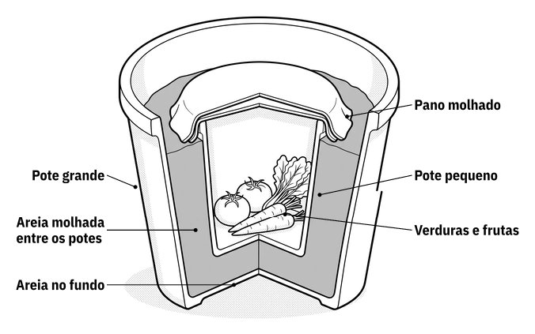
A geladeira de dois potes chega a esfriar até 10 graus abaixo do ar de fora e mantém verduras e frutas por muitos dias. Funciona melhor no tempo quente e seco; no tempo úmido esfria pouco. Não é lugar para guardar carne crua.
Luz e carga sem a rede
Lamparina de óleo de cozinha
No cerco de Sarajevo, sem luz elétrica, os moradores fizeram lamparinas com um pouco de óleo de cozinha e pedaços de cadarço. Funciona com óleo de soja, de girassol, de oliva usado e com banha derretida.
Material: pote de vidro baixo e grosso (de conserva), óleo de cozinha, pavio de algodão (cadarço de algodão, barbante de algodão, tira de camiseta de algodão enrolada), arame fino ou uma tampinha de metal furada no meio.
- Ponha óleo no pote até uns três dedos de altura.
- Faça o suporte do pavio: dobre o arame em espiral, com uma perna comprida que se apoia na borda do pote, ou fure a tampinha de metal no centro.
- Passe o pavio pelo suporte, deixando meio centímetro para fora, em cima. O resto do pavio fica mergulhado no óleo.
- Molhe a ponta de cima no óleo e acenda.
- Chama alta e fumaça preta: puxe o pavio para baixo. Chama fraca: puxe um pouco para cima.
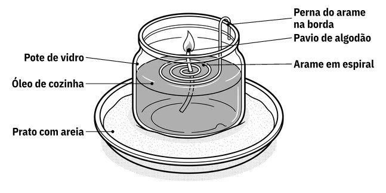
Apagar: abafe com uma tampa ou com outro pote. Nunca jogue água em óleo quente.
Cuidado: pavio de fio sintético (náilon, poliéster) derrete e não acende. Ponha o pote sobre um prato com areia, num lugar onde não possa virar, e mantenha longe de criança.
Carro como carregador
O carro tem um gerador, o alternador, que funciona com o motor ligado. É caro em combustível: a maior parte do que o motor queima vai para mover o próprio motor.
- Aproveite quando já precisar rodar: carregue tudo durante o trajeto, de graça.
- Motor ligado só ao ar livre, nunca na garagem: a fumaça do motor mata.
- Inversor no isqueiro: transforma os 12 volts do carro em tomada comum, mas só para coisa pequena (até uns 150 watts): carregador de notebook, de pilhas, de rádio.
- Não esgote a bateria do carro com o motor desligado: ela precisa sobrar para dar a partida. Na Ucrânia, quem ligou a luz de casa numa bateria de carro aprendeu que ela não é feita para isso: esvaziou rápido quando ligaram um notebook e levou horas para recarregar.
Busque na internet por: “inversor veicular 12V 150W”, “carregador veicular USB”
A verdura que tem gêmea venenosa
Taioba sem erro
A taioba é uma das verduras mais nutritivas do Brasil, mas tem parentes venenosos quase iguais: a taioba-brava, o tinhorão e a comigo-ninguém-pode.
Os 4 sinais da taioba comestível
- Procedência: a muda veio de alguém que já come aquela taioba.
- Nervura da borda: uma veia contorna toda a beirada da folha.
- Forma de coração: o corte em "V" da base da folha chega até o ponto onde o talo encontra a folha.
- Sem mancha roxa: não há mancha roxa no ponto onde o talo encontra a folha. Talo e folha verde-claros. Talo e folha arroxeados são da taioba-brava.
Se faltar qualquer um dos sinais, não coma.
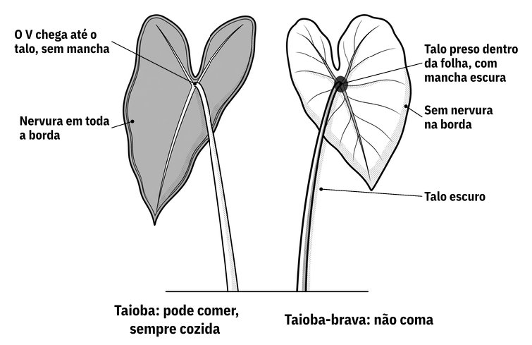
Como preparar
- Use só folhas novas: as velhas têm mais cristais que queimam a boca.
- Lave, tire o talo e a nervura grossa do meio.
- Corte em tiras finas.
- Refogue em óleo com alho e sal até murchar por completo.
- A batata da taioba: sempre bem cozida.
O livro completo
Quando o mundo desligar — Manual do Sobrevivente. Você viu 6 amostras. O livro tem 30 capítulos, 406 páginas e mais de 200 desenhos, do que fazer nas primeiras horas a como se manter por semanas, na cidade, no mato ou no sítio.
- Primeiros passos: mentalidade, planejamento, kits, primeiros socorros.
- O básico para viver: abrigo, água, fogo, sinalização, orientação.
- Comida: plantas comestíveis e tóxicas do Brasil, caça, armadilhas e pesca dentro da lei, preparo, conservação e produção de alimentos.
- Proteção: animais perigosos, segurança, segurança digital, desastres, previsão do tempo.
- Autossuficiência: ferramentas, cordas e nós, energia, higiene, saúde de longo prazo, ofícios, vida em grupo.
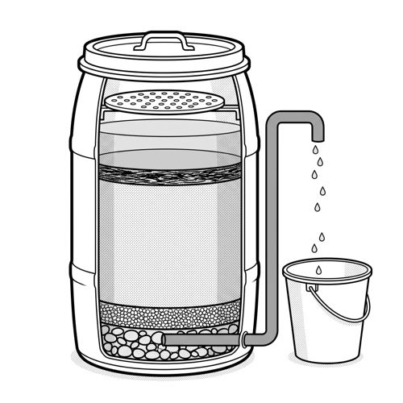
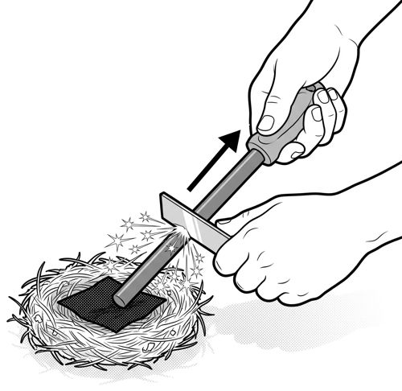
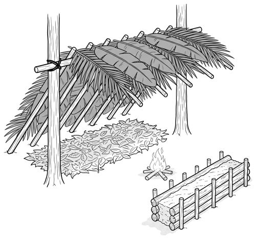
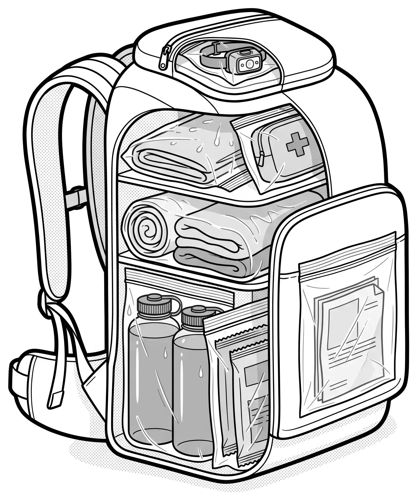
Você recebe o livro em PDF para ler no celular, no tablet ou no computador, sem internet, e uma versão A4 para imprimir. Garantia de 7 dias: não gostou, pede o dinheiro de volta pela própria plataforma de pagamento.
Quem escreveu: Felipe Crivella, projetista e cuteleiro, faz as próprias ferramentas na oficina e vive num sítio na Serra da Mantiqueira, onde testa o que ensina.
© 2026 Felipe Crivella. Este guia pode ser repassado de graça, sem alterar e sem vender. · Instagram: @quandoomundodesligar